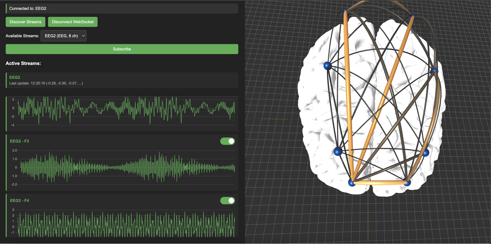
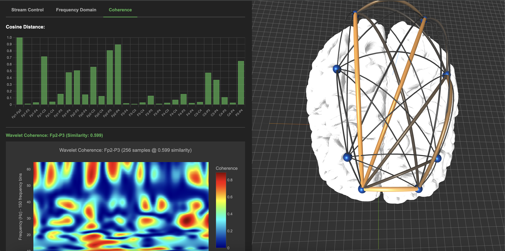
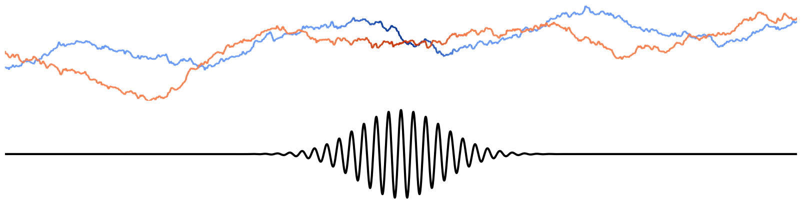

CoherIQs
Advanced EEG Signal Processing

Adaptive Wavelet Decomposition for EEG Analysis

Real-Time Coherence Computation

Wavelet coherence determines lead-lag relationships in time series data across multiple scales— originally proven on El Niño-Southern Oscillation and tropical Indian storm correlations.
Existing implementations are constrained to R, MATLAB, or Python with dated, inefficient algorithms. CoherIQs eliminates these bottlenecks with optimized computation for production data analysis.

Brain activity during a left-hand motor imagery task, visualised as a network. Each particle travelling between electrodes represents a phase relationship at a specific frequency, that has been extracted by wavelet coherence within a specified timestamp.

Left Hand Motor Cortex Activity